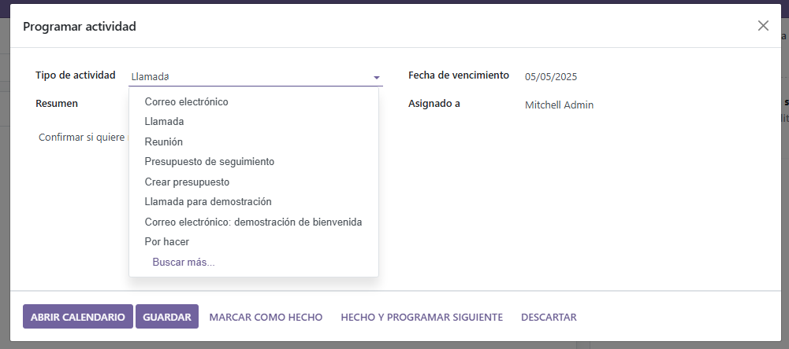

Módulos instalados:
Módulo de Ventas
Módulo CRM
Justificación: Ayuda a gestionar relaciones con clientes potenciales y oportunidades de venta.
- Gestión de leads (clientes potenciales).
- Seguimiento de oportunidades.
- Planificación de llamadas, emails y reuniones.
- Visualización en tablero Kanban con etapas.
Funcionamiento paso a paso:
- Entrar en el módulo CRM desde el menú.
- Crear un lead o una oportunidad con datos del cliente.
- Definir la etapa (nuevo, propuesta, negociación...).
- Añadir actividades: llamada, email o reunión.
- Convertir la oportunidad en venta si es aceptada.
- Visualizar en Kanban y mover con drag & drop.

Tablero Kanban con oportunidades

Formulario de una oportunidad con datos del cliente